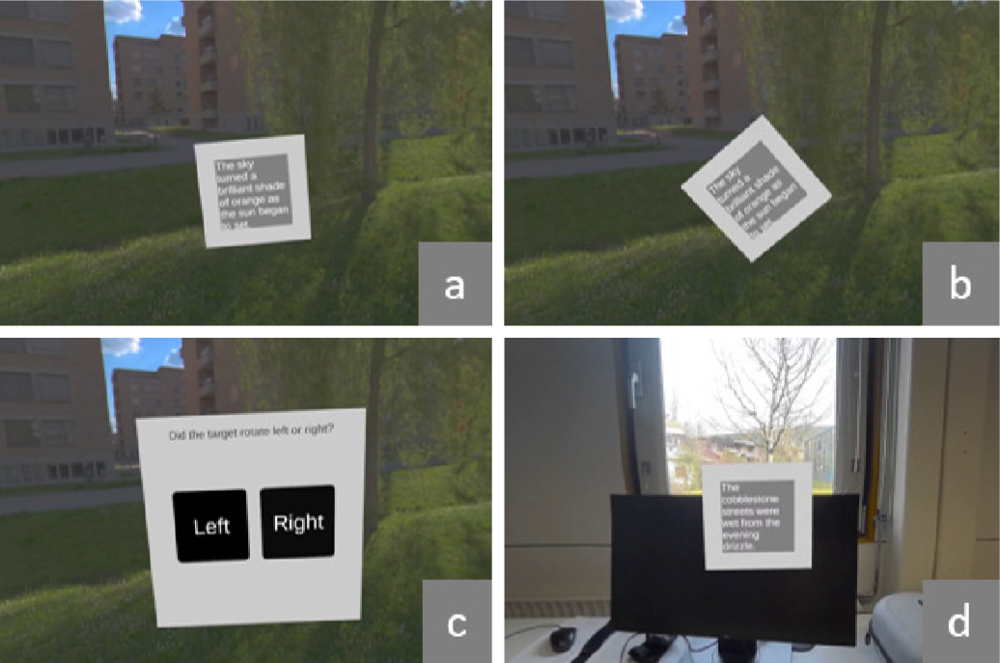

Perception Thresholds for Unobtrusive Movement in VR Versus AR

Venue. ISMAR-Adjunct (2025)
Materials.
DOI
Abstract. Over the last years, extended reality (XR) has been actively promoted as a tool for productivity or office tasks instead of purely for entertainment. Unfortunately, technical limitations of head-mounted XR devices could cause additional ergonomic problems to the ones that office workers already face, such as back pain caused by prolonged sitting. A possible countermeasure that XR offers is to adjust the workplace by placing virtual screens anywhere without physical restrictions. Previous work has also proposed to subtly move screens in VR to induce movement and active sitting in the users without distracting them from their tasks. We replicate a study on perception thresholds for such subtle movement in VR and extend it to AR. Our results mostly confirm those previously documented in VR and that similar effects can be observed in AR.
Link to this page: